说明：画布 - 数据获取
一、背景
在画布作业部署、运行时，已有的kafka数据源中数据不全，需要通过Squirrel/S3/Rpc/Http/Tair等模式获取增量补充数据用于策略执行。
二、名词解释
请求幂等建：当数据接口配置缓存时，需要明确按何key进行缓存，该key就是请求幂等建
三、操作指南
⚠️：三方数据的调用测试，需要保存后方可进行测试。配置修改后也需要保存后才能更新数据进行测试。Squirrel/S3/Rpc/Http等数据自身存储链路请参考上述服务平台操作文档。

|
说明
|
添加配置页面
|
- 基本信息：名称必填，用于在画布中提示该组件的主要逻辑说明
-
配置信息：
- 英文名称：支持小些字母、数字和下划线、最多128字符，用于上下文组件逻辑配置
- 数据类型：Squirrel/S3/Rpc/Http，选择不同的数据类型，下方展示模块不一样
|

|
Squirrel配置
- 存储集群：近线默认存储集群为redis-rc-nearline-public_product，若用户存储在自己的集群上，此处请填写数据所存储的集群英文名称
- 存储类：为用户在Squirrel上创建的存储名称
- 缓存配置：时间加减，默认30分钟，最长X H；
- 结果类型：int/string/map/array
- 查询类型：hash/string
-
查询方式：
当选择hash时，可支持获取 key 下单 field 的 value 值/获取 key 下所有 field 值/获取 key 下所有 value 值/获取所有的 k-v 键值对；
当选择string时，仅支持获取 key 下单 field 的 value 值
- key、value、field均可填写表达式，此处若填写常量需要增加引号比如：'a'
-
高级配置（默认收起）：
- 大象通知人：直接输入misid，多个请用逗号隔开，用于熔断、缓存失败进行通知；
-
调用测试：
点击保存后，点击“去测试”，进行测试
- 平台限流值: 6w/min，如需更高流量，请联系近离值班rd
|
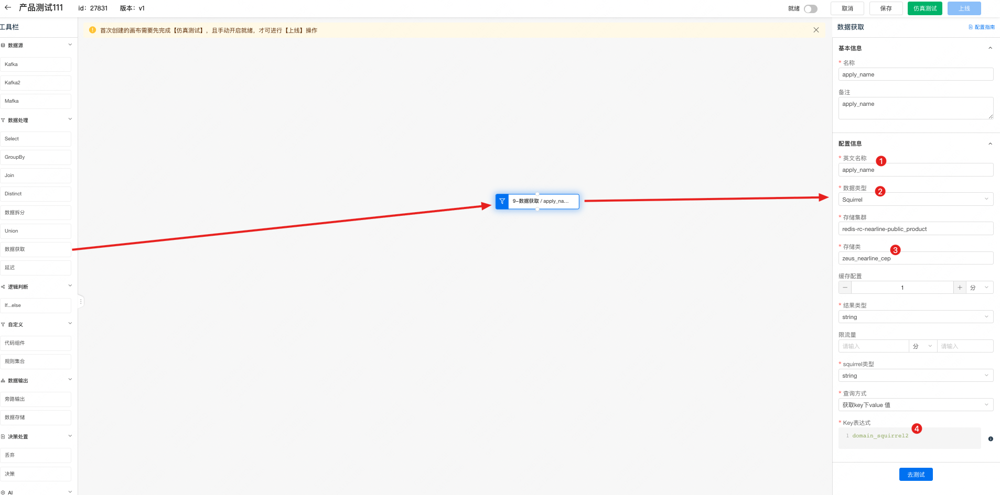
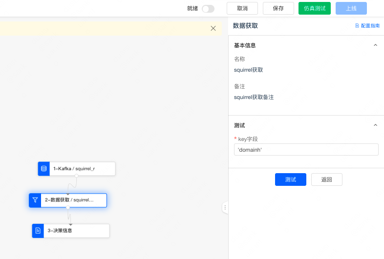 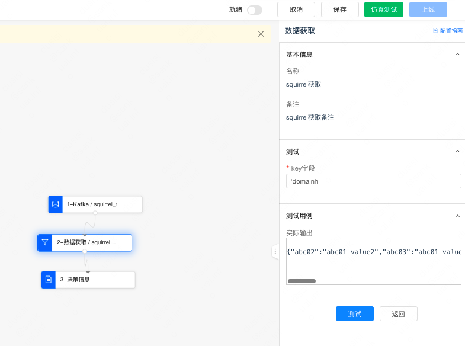
|
S3配置
- 缓存配置：时间加减，默认30分钟，最长X H；
- 结果类型：int/string/map/array
- 查询方式：获取 key 下单 field 的 value 值/获取 key 下所有 field 值/获取 key 下所有 value 值/获取所有的 k-v 键值对
- key可填写表达式，此处若填写常量需要增加引号比如：'a'
-
高级配置（默认收起）：
- 大象通知人：直接输入misid，多个请用逗号隔开，用于熔断、缓存失败进行通知；
-
调用测试：
点击保存后，点击“去测试”，进行测试，测试结果会展示在当前页面中
- 平台限流值：6k/min，如需更高流量，请联系近离值班rd
|
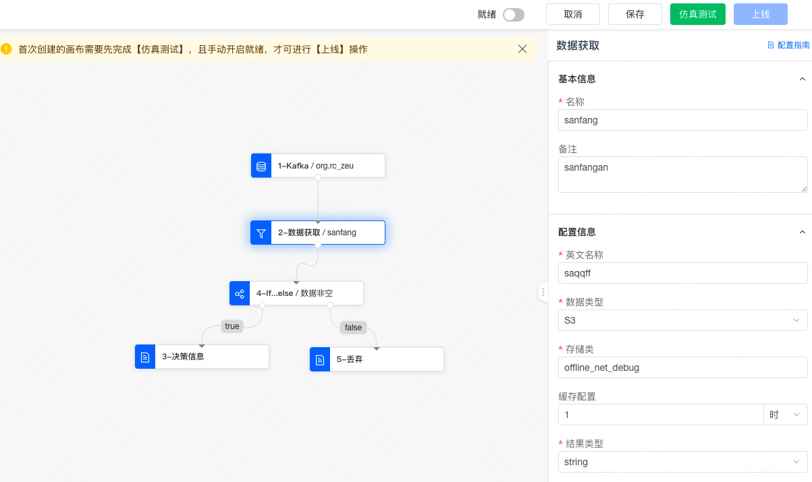
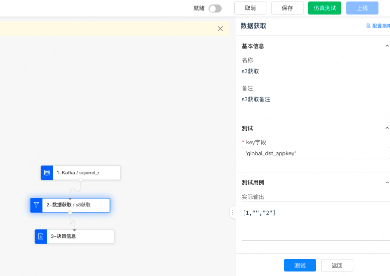
|
RPC配置
- 缓存配置：时间加减，默认30分钟，最长X H；
-
限流量：
时间单位：可选秒/分/小时；
数据量：表明取最近X S/min/H请求量；
- 超时时间：单位默认ms
- 结果类型：map
- Appkey：文本输入
- 入参value、请求幂等建：可填写表达式，此处若填写常量需要增加引号比如：'a'
- 大象通知人：直接输入misid，多个请用逗号隔开，用于熔断、缓存失败进行通知；
-
调用测试：
点击保存后，点击“去测试”，进行测试，测试结果会展示在当前页面中
- 平台限流值:3w/min，如需更高流量，请联系近离值班rd
|
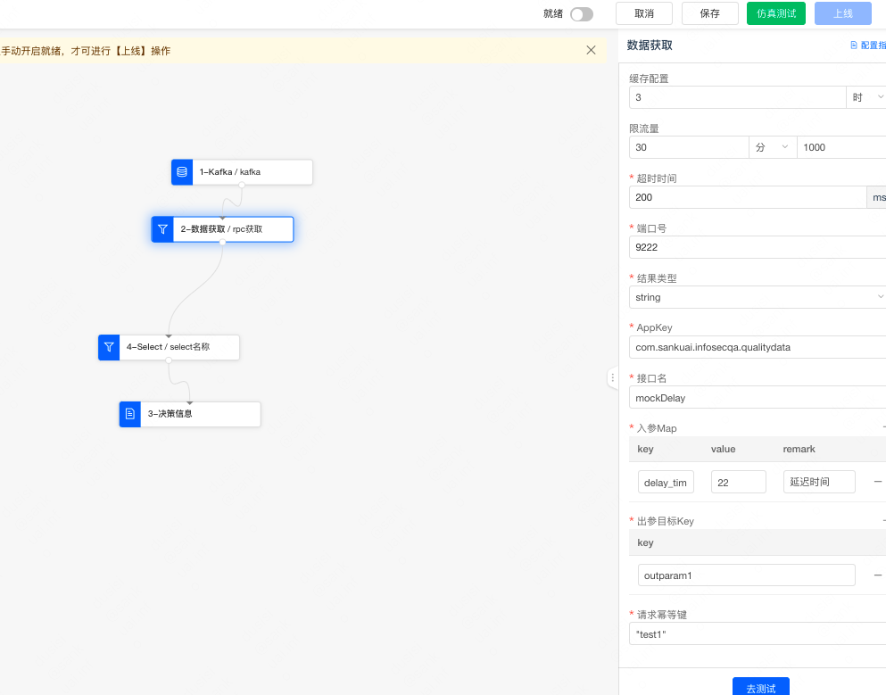
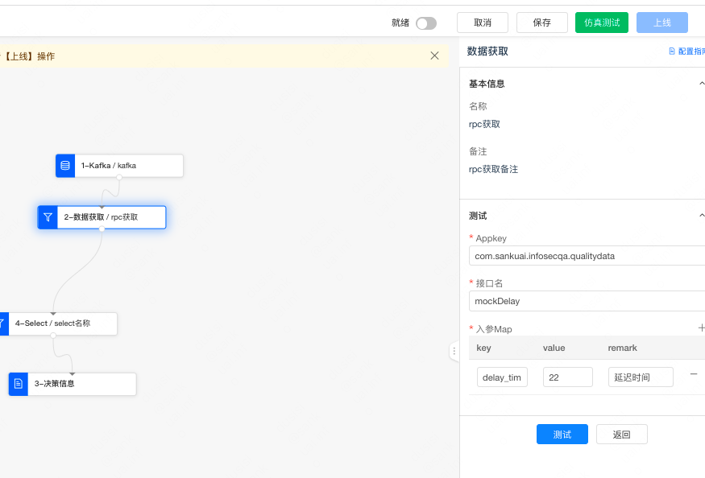 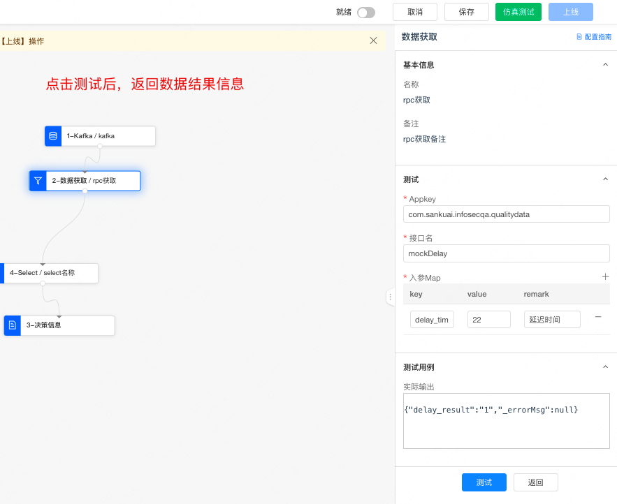
|
Http配置
- 缓存配置：时间加减，默认30分钟，最长X H；
- 结果类型：string
- 限流量：时间单位：可选秒/分/小时；表明取最近X S/min/H请求量
- url：需要先下拉选 get还是post请求
- Header：map格式
- 请求体：string格式
- url、header的value、请求幂等建、请求体可填写表达式，此处若填写常量需要增加引号比如：'a'
- 平台限流值: 6k/min，如需更高流量，请联系近离值班rd
-
高级配置（默认收起）：
- 大象通知人：直接输入misid，多个请用逗号隔开，用于熔断、缓存失败进行通知；
-
调用测试：
点击保存后，点击“去测试”，进行测试，测试结果会展示在当前页面中
|
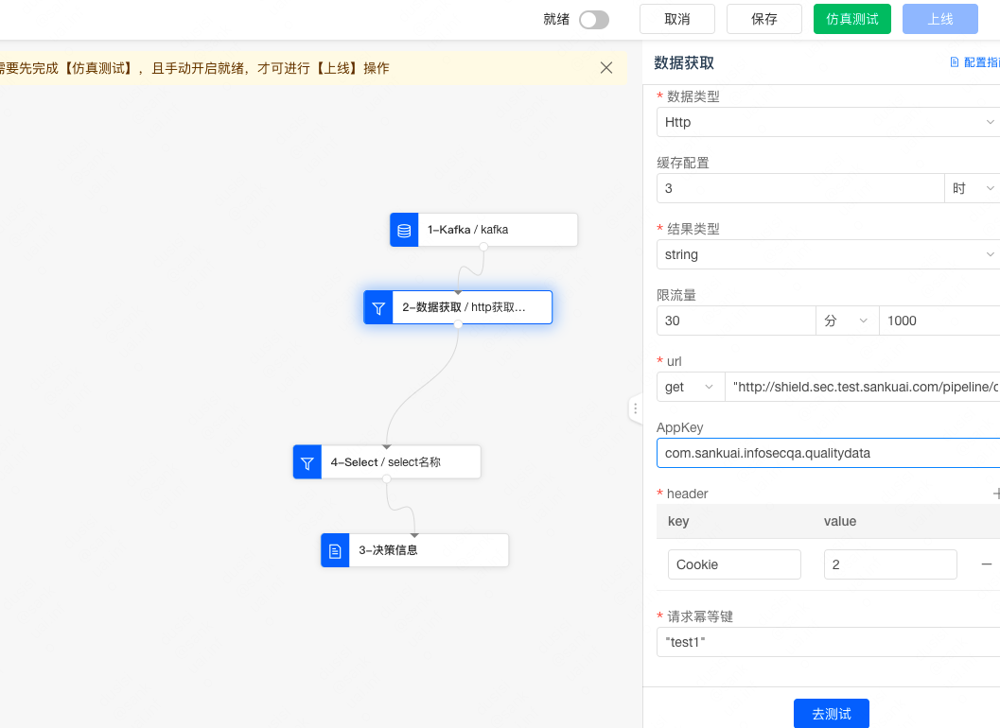
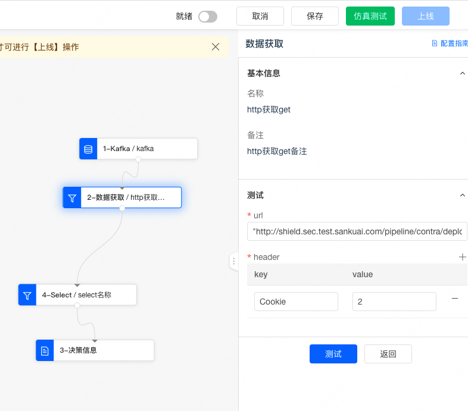 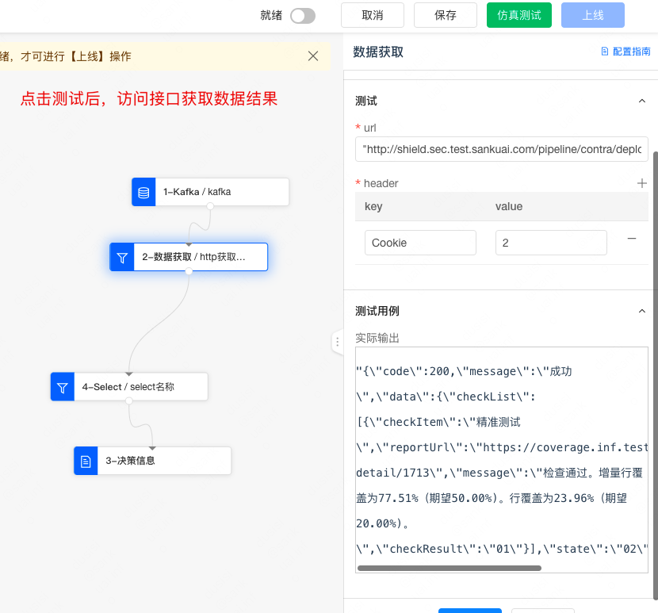
|
Tair配置
- 存储集群：近线默认存储集群为rcom.sankuai.cellar.mtsi.zeusoffline，若用户存储在自己的集群上，此处请填写数据所存储的集群英文名称，即tair侧的RemoteAppkey值
- area：近线默认为5，若用户存储在自己的集群上且设置了自己的area，此处请填写数据所存储area；
- 缓存配置：时间加减，默认30分钟，最长X H；
- 结果类型：int/string/map/array
- 查询类型：hash/string
-
查询方式：
当选择hash时，可支持获取 key 下单 field 的 value 值/获取 key 下所有 field 值/获取 key 下所有 value 值/获取所有的 k-v 键值对；
当选择string时，仅支持获取 key 下单 field 的 value 值
- key、value、field均可填写表达式，此处若填写常量需要增加引号比如：'a'
-
调用测试：
点击保存后，点击“去测试”，进行测试
- 平台限流值: 6w/min，如需更高流量，请联系近离值班rd
|
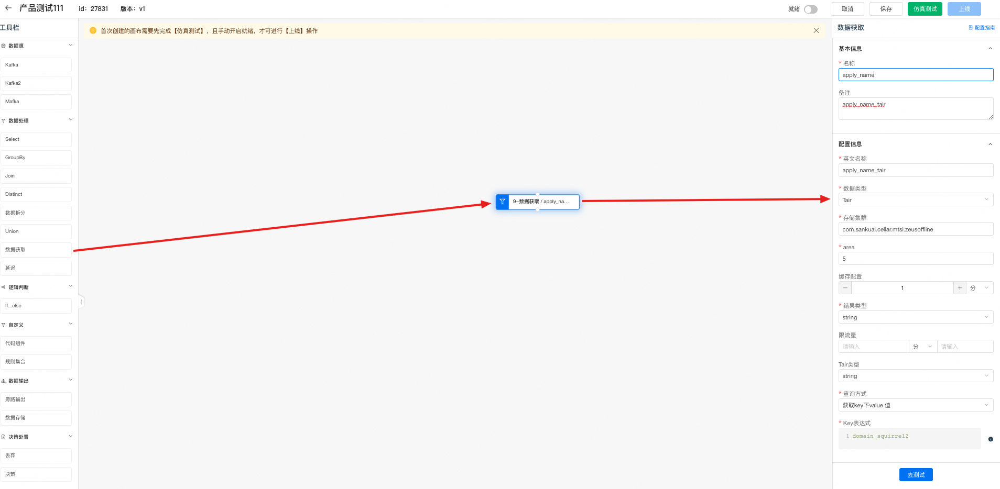
|
|
仿真测试样例 说明
|
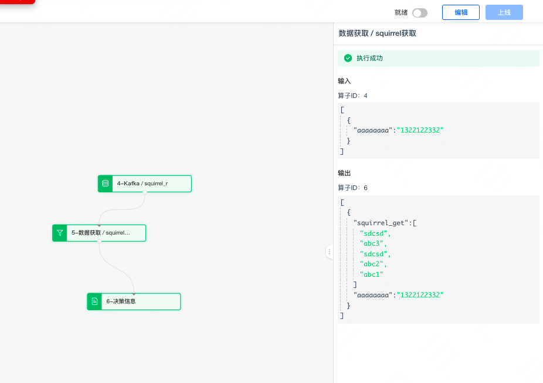
|
四、FAQ
1.配置样例
http get: https://mis.zeus.rc.st.sankuai.com/data_zeus_static/#/paint/detail?id=166&version=1
http post: https://mis.zeus.rc.st.sankuai.com/data_zeus_static/#/paint/detail?id=173&version=1
rpc : https://mis.zeus.rc.st.sankuai.com/data_zeus_static/#/paint/detail?id=175&version=1
2.在数据获取组件中http 对于url前缀拼接动态配置方式
对于url前缀拼接动态获取的参数的场景，可以使用+进行字符串常量和动态参数的拼接，样例："https://sa.sankuai.com/api/idc/ops/"+_mt_servername
3.业务如何开发一个rpc接口跟Zeus对接
学城文档 1323587933（无权限读取标题）
说明：如何开发rpc接口可被Zeus调用
说明：业务数据对接-数据接口